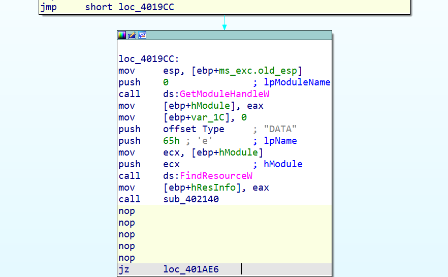
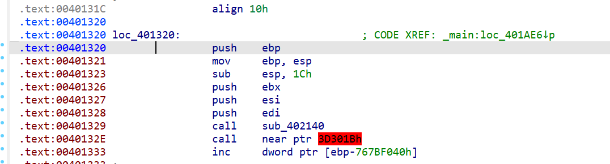
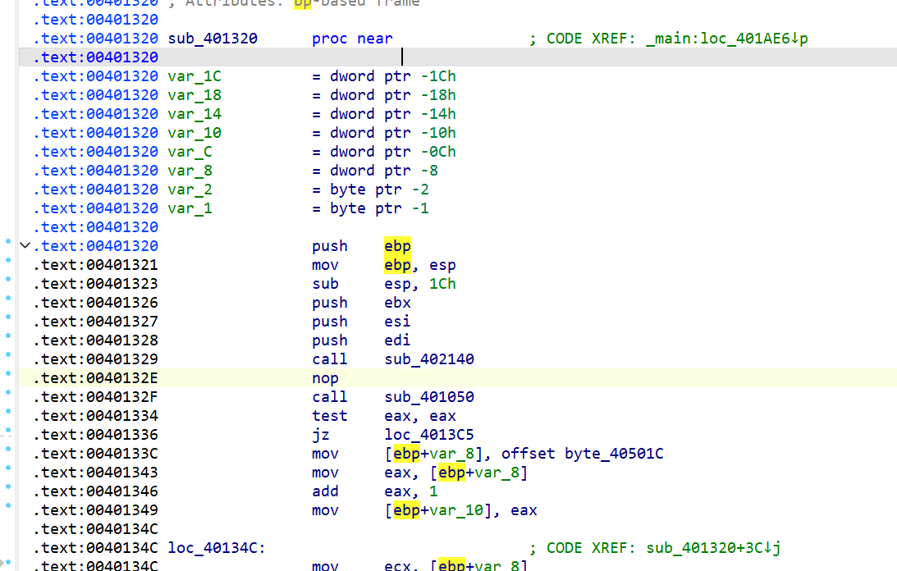
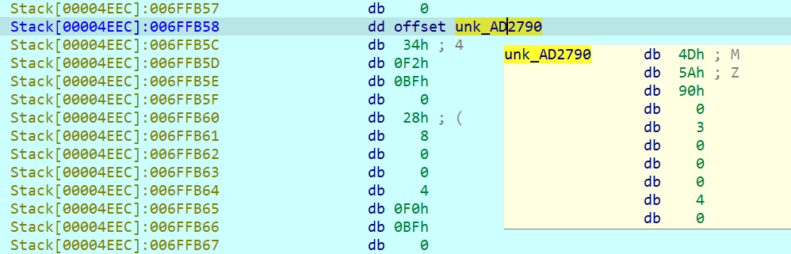
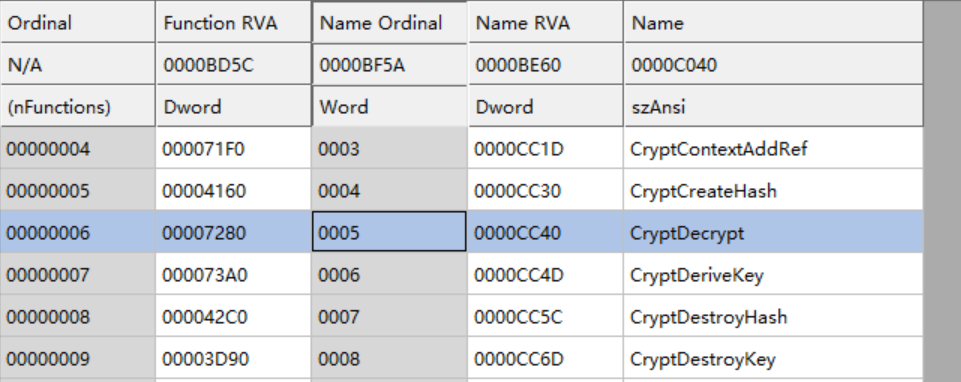
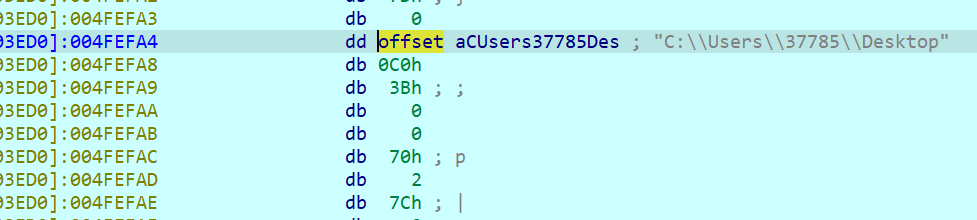

RE file_encryptor⚓︎
32位无壳
代码逆向分析领域中，TLS（Thread Local Storage，线程局部存储）回调函数（Callback Function）常用反调试。TLS回调函数的调用运行要先于EP代码的执行，该特征使它可以作为一种反调试技术的使用。
动调不起来，main函数直接爆红
肯定有反调试、异常处理
main里面没找到，尝试TLS里面找
这里看到了IsDebuggerPresent在except异常处理里
改一下控制流，不要去exit
回到main函数还有一堆异常处理
全部滚吧，NOP所有except
爆红的花指令修一下
红的那一行按U
这里C一下
E8多余的数据NOP掉

这有个花指令，也修一下，和上面的原理一样

P一下

tab
都修复完了记得apply patch to保存到exe文件里，不然动调的时候还是会有反调试
完整的main函数
加载的资源数据最终储存在27行dword_C8541C里，dll资源在sub_C81CE0里加载，我们要把它取出来查看输出函数相关参数
进sub_C81CE0在结尾下个断点，我们需要IpMem里的资源
动调点进去
按D直到出现这个地址

跟过去
这里Shift+*直接OK
Shift+E提取数据
选择raw bytes格式，导出后缀无所谓
放进CFF查看
这里看到了调用了CryptEncrypt函数
CryptEncrypt 是 Windows 加密服务提供程序 (Cryptographic Service Provider, CSP) 中的一个函数，用于加密数据。它是基于 Windows 的加密API (Cryptography API: Next Generation, also known as CNG) 的一个组成部分。 在使用 CryptEncrypt 函数之前，通常需要先初始化一个 CryptoAPI_BLOB 结构体，然后使用 CryptCreateHashHandle 或其他相关函数来创建一个哈希句柄。之后，可以使用这个句柄和密钥来调用 CryptEncrypt 函数。
总之是Windows自带的加密函数
在main函数34行 加密部分往里面找，最后看到一个参数是0xB的，对应加密函数
改成解密函数 对应0x5

断在v6启动的位置
发现动调到这里又自动退出了
看一下汇编
JNZ指令的含义是“Jump if Not Zero”，即当结果不为0时转移。如果执行操作的寄存器或操作数的结果不为0，则控制权转移到指定的标签位置。 JZ指令的含义是“Jump if Zero”，即当结果为0时转移。如果执行操作的寄存器或操作数的结果为0，则控制权转移到指定的标签位置。
所以这里把jz改成jnz就不会跳转到exit去了
（也可以动调的时候该标志位）
注意动调之前一定要apply patch to！！！⚓︎
继续动调，跑到这里又跳出去了
注意一下第10行有关于文件路径的函数SHGetKnownFolderPath和参数ppszPath
第四行定义的ppszPath是一个指向宽字符串的指针，用于存储已知文件夹的路径。直接点开看不见，我们动调。
点进去看一下
一直D到字符串出来

可以看到要求的路径是在你的桌面
回到原来的函数
看第12行 if ( PathCombineW(pszDest, ppszPath, L"document") ):使用PathCombineW函数将已知文件夹的路径和"document"字符串合并，存储在pszDest中。
那路径就是 C:\\Users\37785\\Desktop\\document（Desktop前的部分因人而异）
第13行if ( PathCombineW(FileName, pszDest, L"*.*") ):使用PathCombineW函数将pszDest和"."字符串合并，存储在FileName中。这将生成一个用于搜索所有文件的通配符模式。（文心一言友情供稿）
也不知道是怎么搜的，反正把1.txt扔进去应该没问题
动调F8到这里
看一下1.txt
OHHHHHHHHHHHHHHHH！！！！！！！！！！！！！！！！